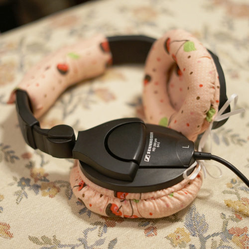
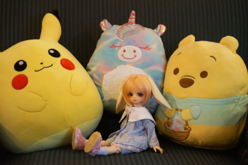

I have been procrastinating really hard on making kiki clothes lately so hard that I made Hina a shirt and haori and now the earpads for my headphones I bought in blog 174.


She looked so cute in Cheby's haori!! The fabric is even the same as her skirt. But he looked so cold without it.

This haori is lined in red tulip print cotton! I've had this fabric around for a long time. You might find a tiny in a sundress made out of it in my archives. The SD10 haori is less wide than the SD13B one.

You'll see the pattern for the haori in Future Zine "resinpilled dollcel"!! If I can make the instructions make sense...
I was using them anyway even with one of the pads half fallen off. The other day I decided to take the very broken one off to make a pattern, rendering them unusable. I was procrastinating hard until the other day when I was drawing and thought "wow I could be listening to music right now" and realized I couldn't...
In typical fran hat(tm) fashion, I had to make them as obnoxious as possible. I decided on chococherry fabric over tsum tsum fabric. I have a couple retired masks in this fabric but I haven't chococherry represented in years!
I used the pieces from the old earpad to make a pattern for the new pair. When lhfm said you have to destroy earpads to get them off, he wasn't kidding. The one that was fine is destroyed now. My method of securing the pads to the headphones was to put a ribbon through a loop 1cm larger than the grille(?) and tightening it into the groove. It was pretty hard to get it in and I needed tweezers, but they're removable.
I was unable to figure out how to sew a donut and invert it so the seams were on the outside. Please someone tell me the solution. I ended up sewing the center and then handsewing the gathered outer edge around the outside. They're stuffed with polyfill and not foam, which is definitely less noise cancelling. Maybe I should sacrifice a squishmallow for my next pair...

the only thing I bought. one prize figure and one strange qposket. still on the fence if I like it or not. definitely did not need either of these!!